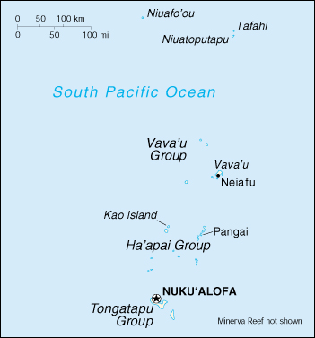

![[Country Flag of Tonga]](../flags/tn-lgflag.jpg)
| Tonga |
|
         |  | |
| Introduction |
Background: The archipelago of "The Friendly Islands" was united into a Polynesian kingdom in 1845. It became a constitutional monarchy in 1875 and a British protectorate in 1900. Tonga acquired its independence in 1970 and became a member of the Commonwealth of Nations. It remains the only monarchy in the Pacific.
| Geography |
Location: Oceania, archipelago in the South Pacific Ocean, about two-thirds of the way from Hawaii to New Zealand
Geographic coordinates: 20 00 S, 175 00 W
Map references: Oceania
Area:
total:
748 sq km
land:
718 sq km
water:
30 sq km
Area - comparative: four times the size of Washington, DC
Land boundaries: 0 km
Coastline: 419 km
Maritime claims:
continental shelf:
200-m depth or to the depth of exploitation
exclusive economic zone:
200 nm
territorial sea:
12 nm
Climate: tropical; modified by trade winds; warm season (December to May), cool season (May to December)
Terrain: most islands have limestone base formed from uplifted coral formation; others have limestone overlying volcanic base
Elevation extremes:
lowest point:
Pacific Ocean 0 m
highest point:
unnamed location on Kao Island 1,033 m
Natural resources: fish, fertile soil
Land use:
arable land:
24%
permanent crops:
43%
permanent pastures:
6%
forests and woodland:
11%
other:
16% (1993 est.)
Irrigated land: NA sq km
Natural hazards: cyclones (October to April); earthquakes and volcanic activity on Fonuafo'ou
Environment - current issues: deforestation results as more and more land is being cleared for agriculture and settlement; some damage to coral reefs from starfish and indiscriminate coral and shell collectors; overhunting threatens native sea turtle populations
Environment - international agreements:
party to:
Biodiversity, Climate Change, Desertification, Law of the Sea, Marine Life Conservation, Nuclear Test Ban, Ozone Layer Protection, Ship Pollution
signed, but not ratified:
none of the selected agreements
Geography - note: archipelago of 170 islands (36 inhabited)
| People |
Population: 102,321 (July 2000 est.)
Age structure:
0-14 years:
41.52% (male 21,633; female 20,850)
15-64 years:
54.43% (male 27,419; female 28,274)
65 years and over:
4.05% (male 1,877; female 2,268) (2000 est.)
Population growth rate: 1.91% (2000 est.)
Birth rate: 24.92 births/1,000 population (2000 est.)
Death rate: 5.86 deaths/1,000 population (2000 est.)
Net migration rate: 0 migrant(s)/1,000 population (2000 est.)
Sex ratio:
at birth:
1.05 male(s)/female
under 15 years:
1.04 male(s)/female
15-64 years:
0.97 male(s)/female
65 years and over:
0.83 male(s)/female
total population:
0.99 male(s)/female (2000 est.)
Infant mortality rate: 14.45 deaths/1,000 live births (2000 est.)
Life expectancy at birth:
total population:
67.94 years
male:
65.54 years
female:
70.45 years (2000 est.)
Total fertility rate: 3.2 children born/woman (2000 est.)
Nationality:
noun:
Tongan(s)
adjective:
Tongan
Ethnic groups: Polynesian, Europeans about 300
Religions: Christian (Free Wesleyan Church claims over 30,000 adherents)
Languages: Tongan, English
Literacy:
definition:
can read and write Tongan and/or English
total population:
98.5%
male:
98.4%
female:
98.7% (1996 est.)
| Government |
Country name:
conventional long form:
Kingdom of Tonga
conventional short form:
Tonga
former:
Friendly Islands
Data code: TN
Government type: hereditary constitutional monarchy
Capital: Nuku'alofa
Administrative divisions: three island groups; Ha'apai, Tongatapu, Vava'u
Independence: 4 June 1970 (emancipation from UK protectorate)
National holiday: Emancipation Day, 4 June (1970)
Constitution: 4 November 1875, revised 1 January 1967
Legal system: based on English law
Suffrage: 21 years of age; universal
Executive branch:
chief of state:
King Taufa'ahau TUPOU IV (since 16 December 1965)
head of government:
Prime Minister Baron VAEA (since 22 August 1991) and Deputy Prime Minister S. Langi KAVALIKU (since 22 August 1991)
cabinet:
Cabinet appointed by the monarch
note:
there is also a Privy Council that consists of the monarch and the Cabinet
elections:
none; the monarch is hereditary; prime minister and deputy prime minister appointed for life by the monarch
Legislative branch:
unicameral Legislative Assembly or Fale Alea (30 seats - 12 reserved for cabinet ministers sitting ex officio, nine for nobles selected by the country's 33 nobles, and nine elected by popular vote; members serve three-year terms)
elections:
last held NA March 1999 (next to be held NA 2002)
election results:
percent of vote - pro-democratic 40%; seats - pro-democratic 5, traditionalist 4
Judicial branch: Supreme Court, judges are appointed by the monarch; Privy Council with the addition of the chief justice of the Supreme Court sits as the Court of Appeal
Political parties and leaders: Human Rights and Democracy Movement [Huliki WATAB, chairman, Viliami FUKOFUKA, president, 'Akilisi POHIVA, vice president]
International organization participation: ACP, AsDB, C, ESCAP, FAO, G-77, IBRD, ICAO, ICFTU, ICRM, IDA, IFAD, IFC, IFRCS, IHO, IMF, Intelsat (nonsignatory user), Interpol, IOC, ITU, Sparteca, SPC, SPF, UN, UNCTAD, UNESCO, UNIDO, UPU, WHO, WMO, WTrO (applicant)
Diplomatic representation in the US:
Tonga does not have an embassy in the US; Ambassador Akosita FINEANGANOFO, resides in London; address: Embassy of the Kingdom of Tonga, c/o Tonga High Commission, 36 Molyneux Street, London W1H 6AB, telephone [44] (171) 724-5828, FAX [44] (171) 723-9074
consulate(s) general:
San Francisco
Diplomatic representation from the US: the US does not have an embassy in Tonga; the ambassador to Fiji is accredited to Tonga
Flag description: red with a bold red cross on a white rectangle in the upper hoist-side corner
| Economy |
Economy - overview: The economy's base is agriculture, which contributes 30% to GDP. Squash, coconuts, bananas, and vanilla beans are the main crops, and agricultural exports make up two-thirds of total exports. The country must import a high proportion of its food, mainly from New Zealand. The industrial sector accounts for only 10% of GDP. Tourism is the primary source of hard currency earnings. The country remains dependent on sizable external aid and remittances to offset its trade deficit. The government is emphasizing the development of the private sector, especially the encouragement of investment.
GDP: purchasing power parity - $238 million (1998 est.)
GDP - real growth rate: -0.3% (1998 est.)
GDP - per capita: purchasing power parity - $2,200 (1998 est.)
GDP - composition by sector:
agriculture:
30%
industry:
10%
services:
60% (1997)
Population below poverty line: NA%
Household income or consumption by percentage share:
lowest 10%:
NA%
highest 10%:
NA%
Inflation rate (consumer prices): 3.2% (1998 est.)
Labor force: 36,665 (1994)
Labor force - by occupation: agriculture 65% (1997 est.)
Unemployment rate: 11.8% (FY93/94)
Budget:
revenues:
$49 million
expenditures:
$120 million, including capital expenditures of $75 million (FY96/97 est.)
Industries: tourism, fishing
Industrial production growth rate: 1.9% (FY95/96)
Electricity - production: 35 million kWh (1998)
Electricity - production by source:
fossil fuel:
100%
hydro:
0%
nuclear:
0%
other:
0% (1998)
Electricity - consumption: 33 million kWh (1998)
Electricity - exports: 0 kWh (1998)
Electricity - imports: 0 kWh (1998)
Agriculture - products: squash, coconuts, copra, bananas, vanilla beans, cocoa, coffee, ginger, black pepper; fish
Exports: $8 million (f.o.b., 1998)
Exports - commodities: squash, fish, vanilla beans
Exports - partners: Japan 53%, US 18%, NZ 6%, Australia 6% (1997 est.)
Imports: $69 million (f.o.b., 1998)
Imports - commodities: foodstuffs, machinery and transport equipment, fuels, chemicals
Imports - partners: NZ 30%, Australia 19%, US 11%, UK 11%, Japan 3% (1997 est.)
Debt - external: $62 million (1998)
Economic aid - recipient: $38.8 million (1995)
Currency: 1 pa'anga (T$) = 100 seniti
Exchange rates: pa'anga (T$) per US$1 - 1.6250 (November 1999), 1.4921 (1998), 1.2635 (1997), 1.2323 (1996), 1.2709 (1995)
Fiscal year: 1 July - 30 June
| Communications |
Telephones - main lines in use: 7,000 (1995)
Telephones - mobile cellular: 114 (1995)
Telephone system:
domestic:
NA
international:
satellite earth station - 1 Intelsat (Pacific Ocean)
Radio broadcast stations: AM 1, FM 2, shortwave 1 (1998)
Radios: 61,000 (1997)
Television broadcast stations: 1 (1997)
Televisions: 2,000 (1997)
Internet Service Providers (ISPs): 1 (1999)
| Transportation |
Railways: 0 km
Highways:
total:
680 km
paved:
184 km
unpaved:
496 km (1996 est.)
Ports and harbors: Neiafu, Nuku'alofa, Pangai
Merchant marine:
total:
7 ships (1,000 GRT or over) totaling 17,760 GRT/25,948 DWT
ships by type:
bulk 1, cargo 2, liquified gas 2, petroleum tanker 1, roll-on/roll-off 1 (1999 est.)
Airports: 6 (1999 est.)
Airports - with paved runways:
total:
1
2,438 to 3,047 m:
1 (1999 est.)
Airports - with unpaved runways:
total:
5
1,524 to 2,437 m:
1
914 to 1,523 m:
2
under 914 m:
2 (1999 est.)
| Military |
Military branches: Tonga Defense Services (includes, Royal Tongan Marines, Tongan Royal Guards, Maritime Force, Police); note - a new Air Wing which will be subordinate to the Defense Ministry is being developed
Military expenditures - dollar figure: $NA
Military expenditures - percent of GDP: NA%
| Transnational Issues |
Disputes - international: none